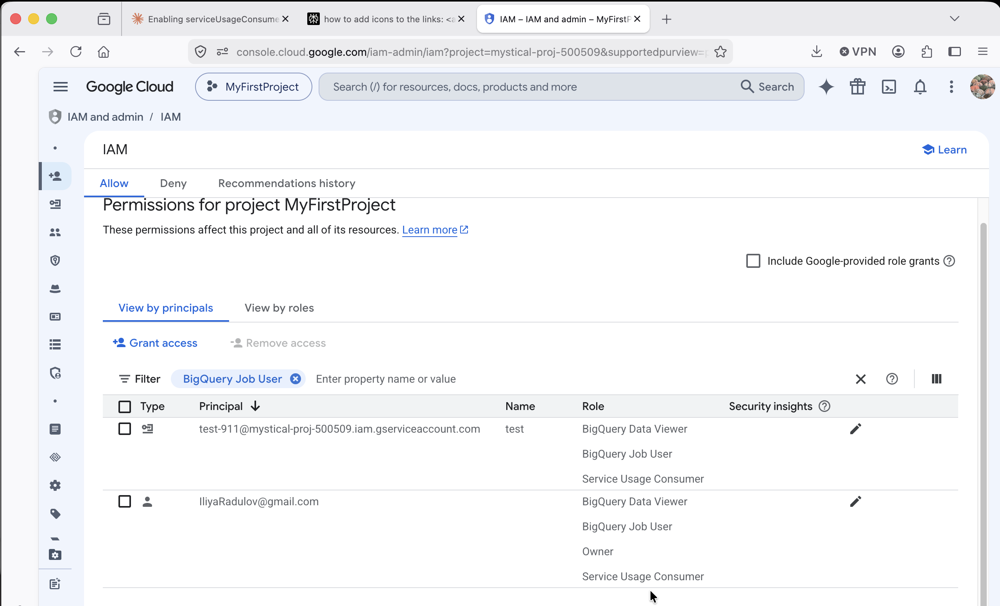
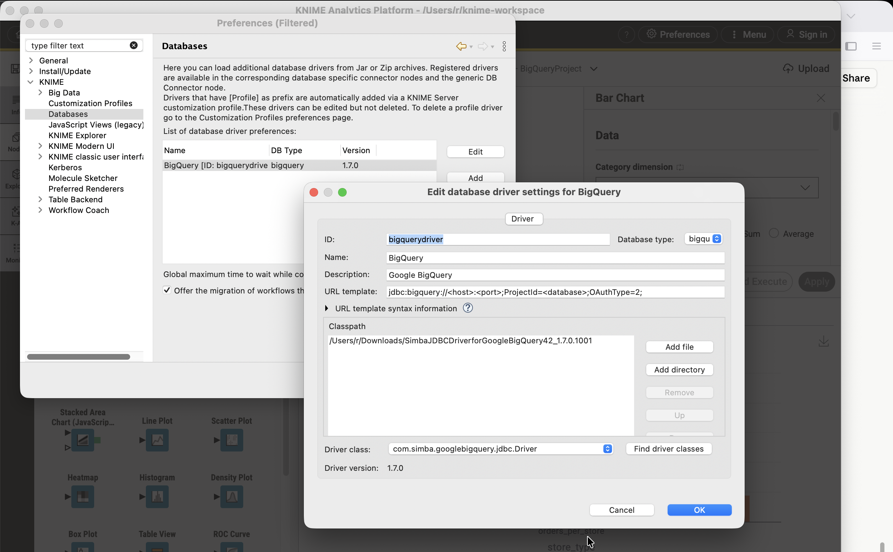
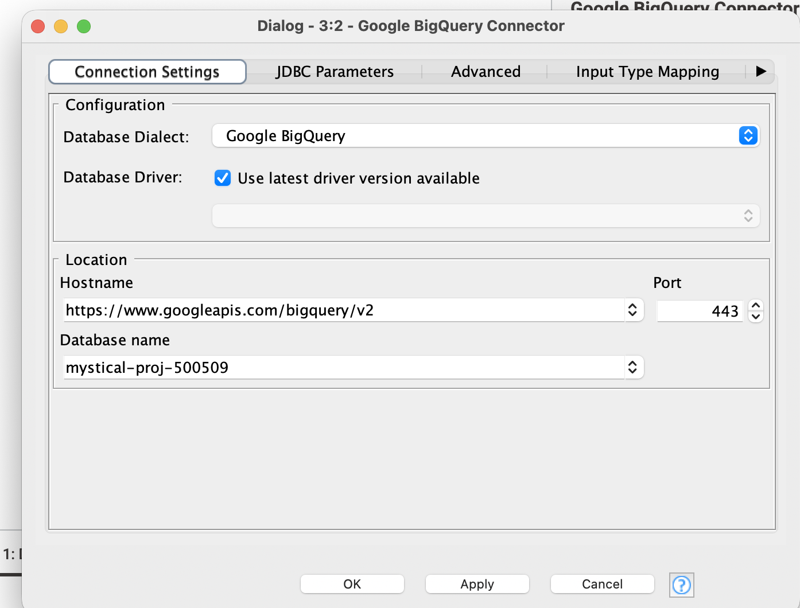
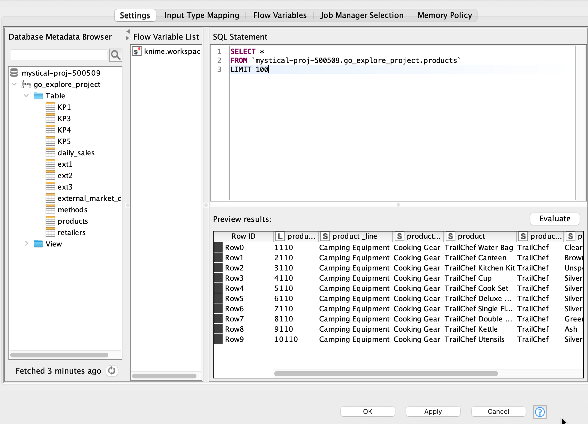
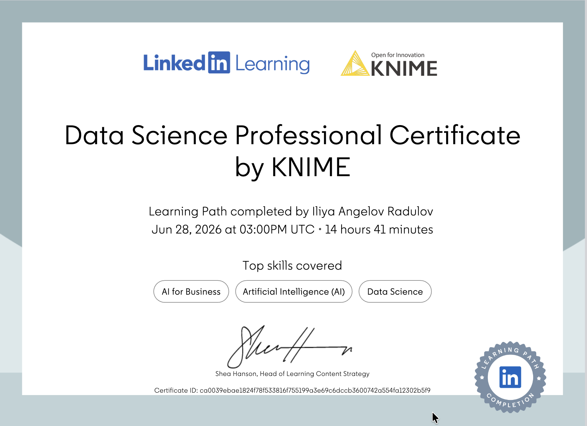

Background
What we built
The goal was to connect KNIME Analytics Platform — a node-based visual data tool — to a shared Google BigQuery project, so that data in the cloud could be queried, explored, and visualized locally without writing any application code.
This required three distinct layers of setup: GCP infrastructure (service account + IAM roles), a JDBC driver registration inside KNIME, and a working workflow with an authenticated connector node pointing at the right project.
Step 1 — GCP
Service account & IAM roles
KNIME connects to BigQuery using a service account — a non-human identity with its own credentials and permissions. The key insight here is that the roles must be assigned to the service account, not just to the user's personal Google account.
| IAM Role | Purpose | Status |
|---|---|---|
| BigQuery Job User | Run queries and jobs against the project | ✓ Required |
| BigQuery Data Viewer | Read tables and datasets | ✓ Required |
| Service Usage Consumer | Use enabled GCP APIs (including BigQuery API) | ✓ Required |
test-911@mystical-proj-500509.iam.gserviceaccount.com). KNIME authenticates as the service account — the personal account's roles have no effect on connector execution.

After creating the service account, a JSON key file was downloaded from GCP Console → IAM & Admin → Service Accounts → Keys. This file is used by KNIME's Google Authenticator node.
Step 2 — KNIME
Registering the Simba JDBC driver
BigQuery's JDBC driver is not bundled with KNIME due to licensing restrictions. It must be downloaded separately from Google and registered manually before the BigQuery Connector node can use it.
Download the Simba BigQuery JDBC driver
From Google Cloud documentation → ODBC/JDBC drivers page. Extract the ZIP — it contains dozens of .jar files.
Open KNIME Preferences → Databases
File → Preferences → KNIME → Databases → Register new driver.
Fill in the driver registration form
Set an ID (e.g. bigquery-driver), select Database Type: Google BigQuery, and paste the URL template below.
Add all .jar files from the extracted folder
Click "Add directory" and point to the unzipped Simba folder. Click "Find driver classes" — select com.simba.googlebigquery.jdbc.Driver.
jdbc:bigquery://<host>:<port>;ProjectId=<database>;OAuthType=2;

Step 3 — KNIME
Configuring the BigQuery Connector node
With the driver registered, the BigQuery Connector node (Node 2) is configured with the following connection settings:
| Field | Value |
|---|---|
| Database Driver | BigQuery (registered driver) |
| Hostname | https://www.googleapis.com/bigquery/v2 |
| Port | 443 |
| Database Name | mystical-proj-500509 (GCP Project ID) |

The Google Authenticator node (Node 1) is connected to the input port of the BigQuery Connector. It loads the service account JSON key file and generates the OAuth token consumed by the JDBC driver.
Step 4 — Querying
Running SQL against the dataset
With the connector node showing a green status light, a DB Query Reader node is attached. The left panel of the node dialog shows the full database metadata tree — all datasets and tables are visible and browsable without leaving KNIME.
SELECT *
FROM `mystical-proj-500509.go_explore_project.products`
LIMIT 100

` `), not single quotes. The full path is always project.dataset.table.

The preview panel returned live data immediately — product lines, categories, and pricing across the go_explore_project dataset. The full workflow produces a KNIME data table that can be connected to any downstream analysis or visualization node.
Final Workflow
The complete node chain
Google Authenticator
Loads the service account JSON key and authenticates with Google APIs. Passes an OAuth token to downstream nodes.
Google BigQuery Connector
Establishes a JDBC connection to mystical-proj-500509 using the Simba driver and the token from Node 1.
DB Query Reader
Executes a SQL query against any table in the project. Results are loaded into a KNIME data table for further processing.
Analysis nodes (Table View, Statistics, Charts…)
Any KNIME analysis or visualization node can be connected to the query output — no additional configuration needed.
Outcome
What this enables
Live cloud connection
Query the shared BigQuery dataset directly from KNIME — no data export or manual download needed.
No-code SQL interface
The metadata browser lets you explore tables visually and build queries with auto-complete.
Visual analytics pipeline
Results flow directly into KNIME's chart, statistics, and machine learning nodes.
Secure by design
IAM roles enforce least-privilege access. The service account only has the permissions it needs.
Tools Used
Tech stack
| Tool | Role |
|---|---|
| KNIME Analytics Platform | Visual workflow engine and SQL client |
| Google BigQuery | Cloud data warehouse hosting the go_explore_project dataset |
| Simba JDBC Driver | BigQuery-to-KNIME connection layer |
| GCP IAM | Service account authentication and access control |
| Docker + Metabase | Local dashboard layer (separate World 1 setup) |
| DuckDB + VS Code | Local SQL on flat files (separate World 1 setup) |
Certificate
Completion Certificate
